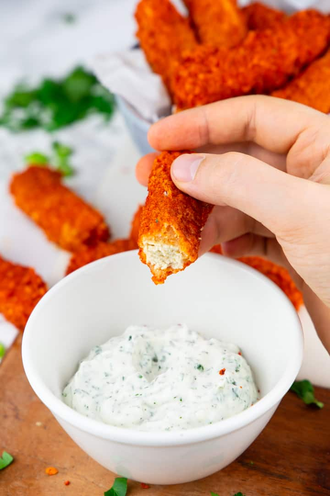

Baked Tofu Sticks

Description
These vegan baked tofu sticks are the perfect comfort food! They’re crispy, spicy, and super easy to make! We like them best with homemade vegan ranch sauce.
If you’re a fan of hot wings, you will love these spicy tofu sticks! They’re covered in Frank’s Red Hot Buffalo sauce and thanks to panko breadcrumbs they’re incredibly crispy.
And the best thing is that they’re baked and not fried. So they have less calories and are also super easy to make!
Ingredients
- very firm tofu
- all-purpose flour
- unsweetened plant-based milk (almond or soy)
- garlic powder
- paprika powder
- panko breadcrumbs
- salt and pepper
- olive oil
- Frank's Red Hot Buffalo Wings sauce
- vegan mayonnaise
- dried or fresh dill and parsley
Steps
- Drain the tofu and pat it dry with a paper towel. Cut it into sticks.
- In a large bowl, combine the all-purpose flour, the plant-based milk, the water, the garlic power, the paprika powder, the salt, and the black pepper. Stir until well combined.
- Dip the tofu sticks into the batter, so they’re completely coated.
- Then roll them in the panko breadcrumbs.
- Line a baking sheet with parchment paper and lay the tofu fingers on the baking sheet. Don’t put them on top of each other. Bake for 25 minutes at 350 °F.
- Combine Frank’s Red Hot Buffalo Wings sauce with a tablespoon of olive oil and pour it over the baked tofu fingers. Evenly coat them from all sides by carefully stirring them a few times.
- Put the coated sticks back on a baking sheet lined with parchment paper. Bake again for 20 minutes at 350 °F.
- For the vegan ranch dip, combine the vegan mayonnaise with fresh or dried dill and parsley and stir until well combined. Serve the freshly baked vegan tofu sticks with the vegan ranch and enjoy! Also sprinkle some chopped green onions and freshly chopped parsley on top if you want.